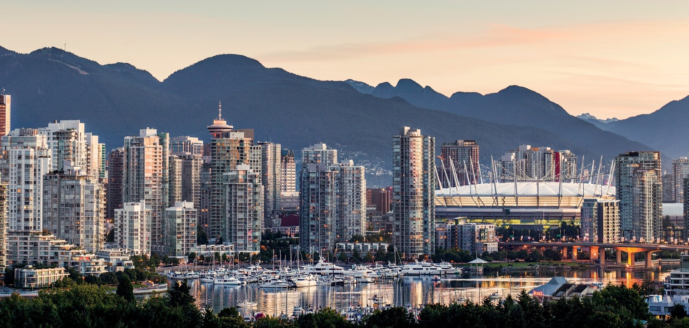

Places To Visit
All About Rome
 Rome (Italian: Roma), the Eternal City, is the capital and largest city of Italy and of the Lazio region. It is famous for being the home of the ancient Roman Empire, the Seven Hills, La Dolce Vita (the sweet life), the Vatican City and Three Coins in the Fountain.
Rome (Italian: Roma), the Eternal City, is the capital and largest city of Italy and of the Lazio region. It is famous for being the home of the ancient Roman Empire, the Seven Hills, La Dolce Vita (the sweet life), the Vatican City and Three Coins in the Fountain.
To learn more click here:Rome
Back to the top
All About Dubai
 Dubai is a city and emirate in the United Arab Emirates known for luxury shopping, ultramodern architecture and a lively nightlife scene. Burj Khalifa, an 830m-tall tower, dominates the skyscraper-filled skyline. At its foot lies Dubai Fountain, with jets and lights choreographed to music. On artificial islands just offshore is Atlantis, The Palm, a resort with water and marine-animal parks.
Dubai is a city and emirate in the United Arab Emirates known for luxury shopping, ultramodern architecture and a lively nightlife scene. Burj Khalifa, an 830m-tall tower, dominates the skyscraper-filled skyline. At its foot lies Dubai Fountain, with jets and lights choreographed to music. On artificial islands just offshore is Atlantis, The Palm, a resort with water and marine-animal parks.
To learn more click here:Dubai
Back to the top
All About Vancouver

Vancouver, a bustling west coast seaport in British Columbia, is among Canada’s densest, most ethnically diverse cities. A popular filming location, it’s surrounded by mountains, and also has thriving art, theatre and music scenes. Vancouver Art Gallery is known for its works by regional artists, while the Museum of Anthropology houses preeminent First Nations collections.
To learn more click here:Vancouver
Back to the top
All About Egypt

Egypt, a country linking northeast Africa with the Middle East, dates to the time of the pharaohs. Millennia-old monuments sit along the fertile Nile River Valley, including Giza's colossal Pyramids and Great Sphinx as well as Luxor's hieroglyph-lined Karnak Temple and Valley of the Kings tombs. The capital, Cairo, is home to Ottoman landmarks like Muhammad Ali Mosque and the Egyptian Museum, a trove of antiquities.
To learn more click here:Egypt
Back to the top
All About Agra
Agra is a city on the banks of the Yamuna river in the Indian state of Uttar Pradesh, about 210 kilometres south of the national capital New Delhi and 335km west of the state capital Lucknow.
To learn more click here:Agra
Back to the top
All About Venice
Venice, the capital of northern Italy’s Veneto region, is built on more than 100 small islands in a lagoon in the Adriatic Sea. It has no roads, just canals – including the Grand Canal thoroughfare – lined with Renaissance and Gothic palaces. The central square, Piazza San Marco, contains St. Mark’s Basilica, which is tiled with Byzantine mosaics, and the Campanile bell tower offering views of the city’s red roofs.
To learn more click here:Venice
Back to the top
 Hi, welcome to my webpage. I would like to take you on a virtual tool to the places
I would like to visit on Earth. When you travel to new places you get enriched by
the culture & cusine of the different cities and countries.
Hi, welcome to my webpage. I would like to take you on a virtual tool to the places
I would like to visit on Earth. When you travel to new places you get enriched by
the culture & cusine of the different cities and countries.